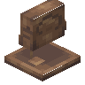

板鱼雕像
Slabfish Effigy
英文名: Slabfish Effigy命名空间 ID:
environmental:slabfish_effigy类型: 方块所属模组: Environmental资料检索: 🔎 在 MC百科 搜索「板鱼雕像」合成获得 (1)
有序合成Environmental

原始 JSON
{
"type": "minecraft:crafting_shaped",
"category": "misc",
"key": {
"#": {
"item": "minecraft:mud_bricks"
},
"S": {
"item": "minecraft:mud_brick_slab"
}
},
"pattern": [
" S ",
"S#S"
],
"result": {
"count": 1,
"id": "environmental:slabfish_effigy"
}
}